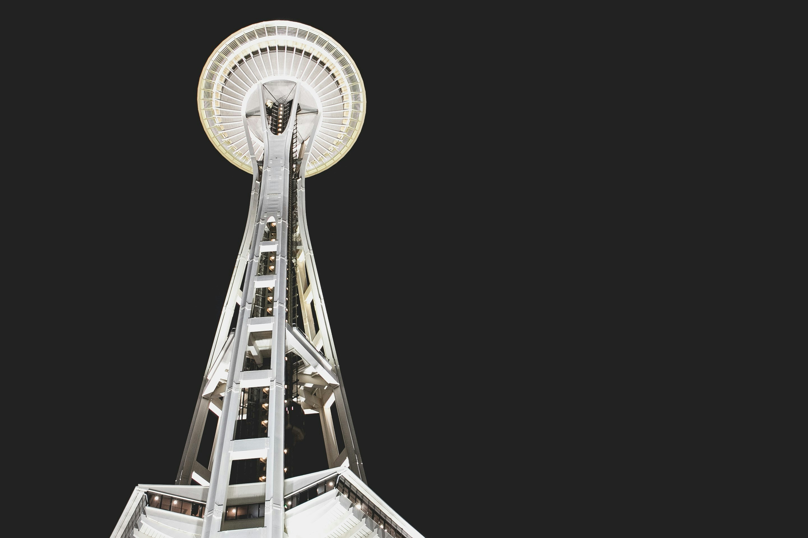

Space Needle
The Space Needle is Seattle's most iconic landmark, offering breathtaking views of the city and its surrounding mountains and waterways. Originally built for the 1962 World's Fair, it features an observation deck and a rotating restaurant.